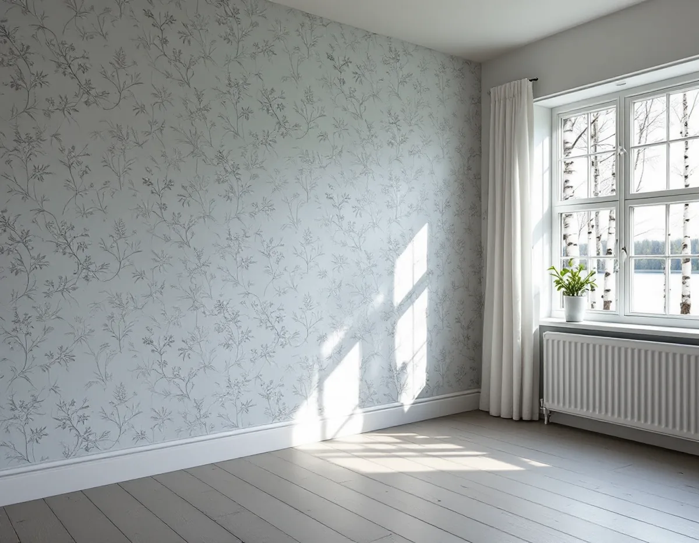
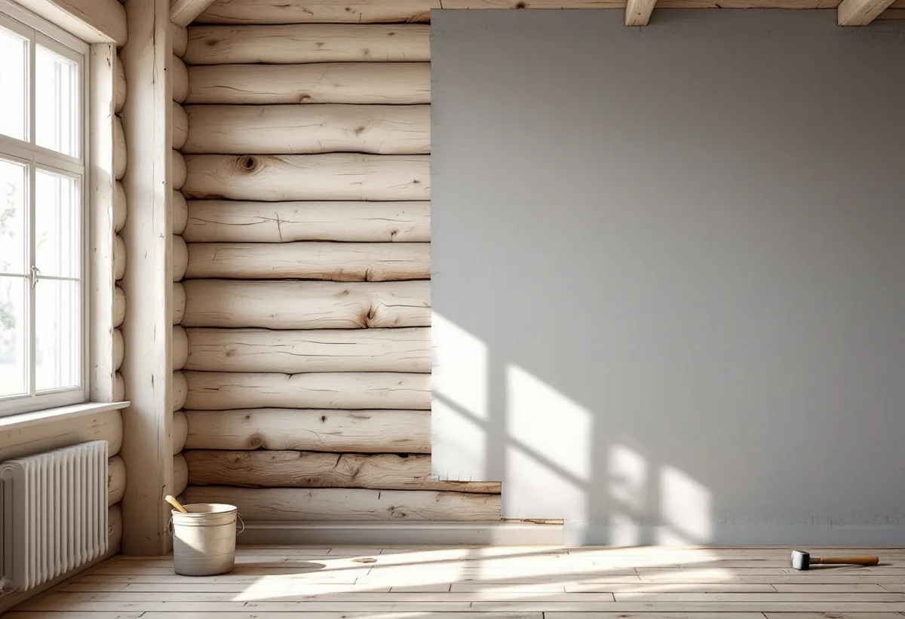

Platsbesök
Vi ser vad väggen är byggd av – timmer, lerklining, skivor eller papp – och hur huset värms.
När ett sommarhus på Ekerö blir ett hus att bo i året runt kan väggarnas insida behöva bytas. Masonit kommer ner, timmer kommer fram och gamla tapetlager hamnar i vägen. Geal Entreprenad AB tapetserar i villor, fritidshus och gårdar på Mälaröarna, och vi väljer underlag efter vad väggen är byggd av och om huset ska värmas hela vintern.

Kommunens kulturmiljöprogram från 2015 konstaterar att fritidshus permanentas i snabb takt. På östra Ekerö har områden med sommarbostäder, som Älvnäs, Gällstaö och Erikssten, permanentats och förtätats under de senaste decennierna, och sommarvillor och sportstugor från 1900-talet har byggts om eller rivits. På Adelsö uppfördes förhållandevis stora fritidshusområden under andra halvan av 1900-talet.
För tapeten betyder det två saker. Väggarna i ett hus som byggdes för sommarbruk kan vara byggda annorlunda än i en villa, och ett hus som ska värmas året runt kan bära andra ytskikt än ett som står kallt på vintern.

I Svenska Byggnadsvårdsföreningens frågespalt berättar en husägare som vinterbonade ett fritidshus från 60-talet att väggarna tidigare var klädda med 6 millimeter masonit, och att flera skivor gick sönder när de togs ner. Föreningen svarade att hårdboard, HDF, är en något tätare träfiberskiva än vanlig masonit, och att skillnaden mellan två skivor på 3 millimeter av det ena eller det andra är marginell.
Värmen avgör vilken tapet som passar. Om huset värms upp året runt är det enligt föreningen inga problem med ett tätt skikt på insidan, men om huset kallställs på vintern kan fukt anrikas bakom tätskiktet. Ska huset fortfarande stå kallt delar av året väljer vi därför underlag och tapet utan täta skikt. Vid platsbesöket frågar vi hur huset värms i dag och hur det ska värmas efter renoveringen, eftersom svaret styr resten av arbetet.
En timmervägg bör pappspännas innan den tapetseras, skriver Byggnadsvårdsföreningen. Pappspänningen är förlåtande mot ojämnheter, men väggen behöver först skrotas, det vill säga att man slår och kratsar bort ojämnheter och löst material. Annars kan det lossna och falla ner bakom pappen när den spikas. Större skarvar mellan stockarna, såtar, kan fyllas med trekantlister eller lerbruk, vilket samtidigt minskar luftrörelser och gör det svårt för möss att ta sig fram.
Där det är tomt i såten finns inget att spika i. Föreningen tipsar om att limma överlappningen med benlim, som värms i vattenbad, och att markera på pappen var såten går innan nästa våd sätts upp. I hörnen spikas hörnkappor som rätar och förstärker hörnet, och sedan klistras remsor över alla skarvar innan tapeten kommer upp.
En lerklinad vägg förlimmas med utspätt tapetklister innan den tapetseras, och föreningen rekommenderar klister i pulverform. Ibland kan det vara bra att först klistra upp vanlig golvpapp. Lerkliningen kan lossna av mekanisk stress och av fukten i spackel eller tapetklister, så vi lagar mindre skador med ett inte alltför hårt spackel. Att spika spännpapp i lerklining är svårt; alternativen är att spika fast ramar för pappen eller att klistra målarpapp, täckpapp, direkt på den gamla ytan.
I kommunens äldsta byggnader kan tapeterna vara skyddade. Kulturmiljöprogrammet beskriver Ekebyhov som Sveriges största träslott, en herrgård av liggtimmer med flera värdefulla interiörer, och för byggnadsminnet Hertigarnas stall vid Drottningholm gäller att målningar och tapeter omfattas av skyddet. Gäller frågan fasaden på stugor och uthus finns det mer under målare på Ekerö.
Vi ser vad väggen är byggd av – timmer, lerklining, skivor eller papp – och hur huset värms.
Spännpapp, klistrad papp eller nya skivor väljs efter väggen och uppvärmningen.
Nedtagning, underlag och uppsättning står som egna poster.
Väggen skrotas, såtar fylls och lösa partier fästs.
Pappen spikas och limmas, hörnkappor sätts och skarvarna täcks med remsor.
Tapeten sätts upp när underlaget har torkat.
Skatteverket räknar tapetsering som rotarbete i den bostad du äger, i villan, fritidshuset, bostadsrätten eller ägarlägenheten.
Avdraget är 30 procent av arbetskostnaden, högst 50 000 kr per person och år och högst 75 000 kr tillsammans med rutavdrag. Material som tapet, papp och klister ger inget avdrag, och inte heller resor. Geal drar avdraget direkt på fakturan.
Hur mycket som ska rivas, hur ojämna väggarna är och om de behöver spännpapp påverkar mest. Efter ett gratis platsbesök får du ett skriftligt kostnadsförslag.
Fasad, fönster och invändig målning.
Målare i Stockholm →Takbyte, takbesiktning och plåtarbeten.
Takläggare på Ekerö →Stenhamra, Kungshatt och Adelsö.
Takrenovering på Ekerö →Utanför plan, strandskydd och eget avlopp.
Attefallshus på Ekerö →Anmälan, mjukt vatten och eget avlopp.
Badrumsrenovering på Ekerö →Nytt hus, vattenskydd och bergvärme.
Byggföretag på Ekerö →Väder, säsong och torktider på öarna.
Fasadmålning på Ekerö →Egnahem, villaområden och äldre gårdar på Ekerö.
Fasadrenovering på Ekerö →Sommarvillor och 60-talsvillor på Ekerö.
Fönsterbyte på Ekerö →Villor i Stenhamra och omgjorda sommarhus.
Golvläggare på Ekerö →Slipa trägolv som ligger på golvvärme.
Golvslipning på Ekerö →Vedspis, egen brunn och nya sopsorteringen.
Köksrenovering på Ekerö →Sommarvillor, stugor och villor på Mälaröarna.
Målare på Ekerö →Takvatten, solceller och plåttak på Ekerö.
Plåtslagare på Ekerö →Altan, gäststuga och snickeri nära Mälaren.
Snickare på Ekerö →